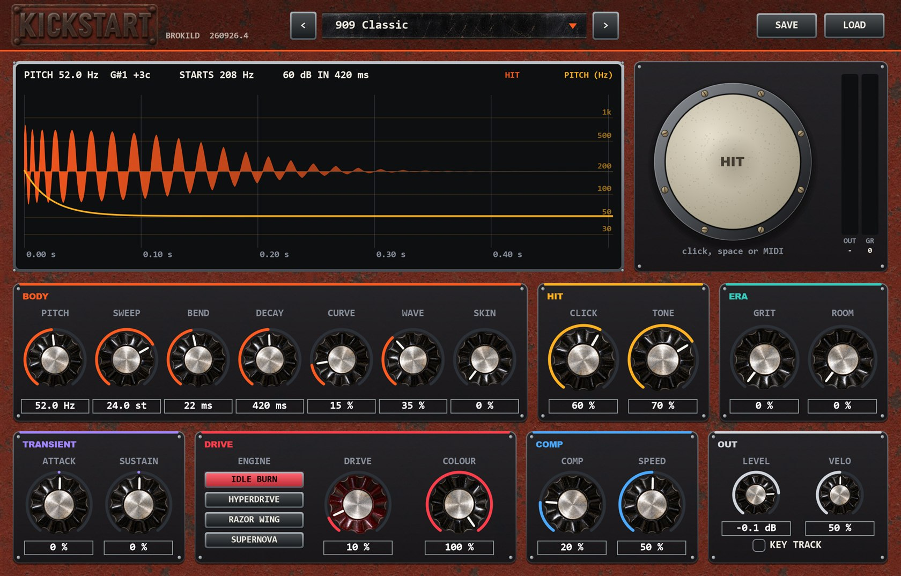
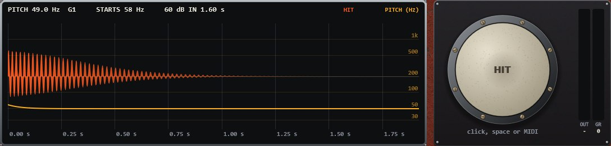
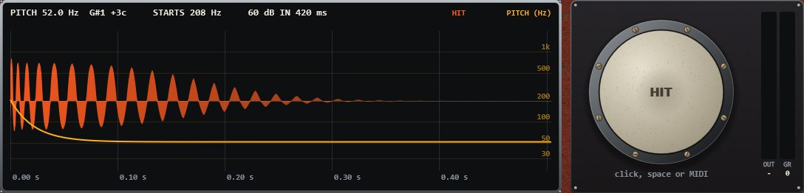
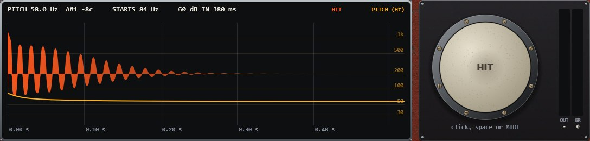
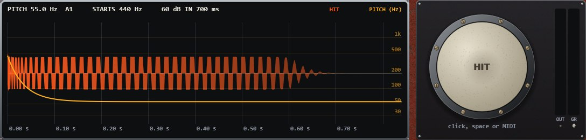
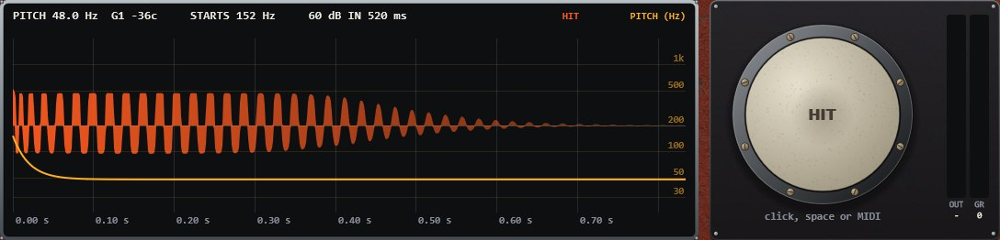
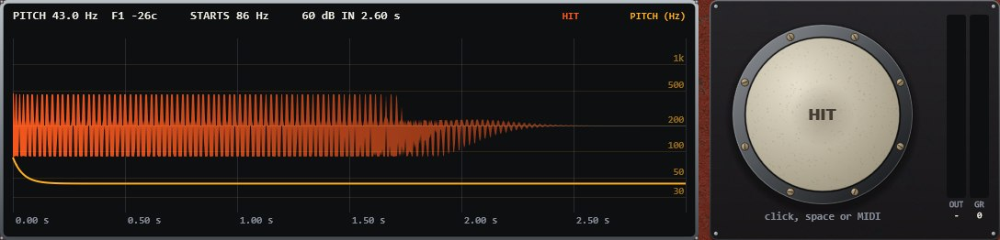

Every kick you need, from one small set of knobs. No samples.
An 808, a 909 and a kick drum with a felt beater are not three different machines. They are three points in one space: how low the drum sits, how far and how fast its pitch falls, how long it rings, what the beater hits it with, and how much of the room comes along. Kickstart gives you those axes as twenty-one controls and synthesises the rest — acoustic kits, the classic drum machines, techno rumble, gabber, hardstyle, dubstep and a trap 808 you can play as a bass line.
Windows VST3 + standalone · free download · source included · build 260926.4

Most kick plugins give you a simulation per machine. Kickstart gives you the physics they all share, and lets you walk between them.
A kick is a drum whose pitch falls. PITCH is where it lands, SWEEP is how far above that it starts, and BEND is how fast it gets there — an 808 falls a little and slowly, a 909 a lot and fast, gabber further still. DECAY and CURVE decide whether it dies like something struck or holds like a modern sub. SKIN turns the oscillator into a real drum head, with the membrane’s inharmonic modes and the way a head starts sharp when you hit it hard. Then the beater, the era, the room and the damage.
The display redraws the hit and its pitch curve every time a knob moves, so you can see the difference between two drums as well as hear it.






Kick drum and nothing else, straight out of the factory presets. The presets are named so you can dial up the same ones.
Studio Kick, Jazz Kick, Rock Kick and Kit In A Room, at 96 bpm.
808 Boom, 909 Classic, LinnDrum, SP-12 Boom Bap and MPC60 Thump.
Techno Rumble at 132, Hardstyle at 150, Gabber at 180, Dubstep Punch at 140 and Psytrance Tick at 145.
KEY TRACK on, so the MIDI note sets the pitch. One preset, a whole bass line.
One kick over six bars while SKIN turns from an electronic oscillator into an acoustic drum head.
The same kick through IDLE BURN, HYPERDRIVE, RAZOR WING and SUPERNOVA, in that order.
Twenty-one knobs in seven sections, left to right in the order the sound meets them.
PITCH where it settles, 25–160 Hz, with the note name. SWEEP how far above it starts, up to 48 semitones. BEND how fast it falls: short is a snap, long is a zap.
DECAY to −60 dB, 50 ms to 4 s. CURVE from a struck drum to a held sub. WAVE sine to triangle (the 909) to a rounded square. SKIN from oscillator to real drum head.
CLICK is its level. TONE runs from a felt thud through a wooden knock and the 909’s noise click to a digital tick.
GRIT lowers the sample rate and bit depth: around 30 % is the 12-bit SP-12, Linn 9000 and MPC60, around 55 % the 8-bit DMX and LinnDrum. ROOM is the air round a real kit — and fed into DRIVE, a techno rumble.
ATTACK and SUSTAIN, bipolar. The shaper reads the synth’s own envelopes instead of guessing from the audio, so it never ripples on a low kick.
From Battlestar Overdrive: IDLE BURN warm tube, HYPERDRIVE harmonics that make a sub read on a phone, RAZOR WING tanh into hard clip, SUPERNOVA fold, crush and chaos. DRIVE and COLOUR. Level-matched, so more drive is more character, not more volume.
COMP is threshold and ratio on one knob, with its own make-up. SPEED: slow lets the hit through, fast flattens and pumps. 1.5 ms look-ahead.
LEVEL under a soft ceiling. VELO makes a hard hit louder, brighter and bend further. KEY TRACK lets the MIDI note set the pitch, C1 = PITCH — an 808 you can play.
A live display of the hit and its pitch curve. A HIT pad — the centre hits hardest, the rim softer — or space, or MIDI. OUT and GR meters, a preset browser, SAVE and LOAD.
Thirty-one factory presets in three banks, plus Init. The classic bank walks through MusicRadar’s ten drum machines that changed music history, each one in the spirit of the original.
Every preset is level-matched by measurement, so flicking through the
banks compares drums rather than volumes. Your own go to
Documents\Brokild patches\Kickstart.
The bench renders real audio and measures it — 52 engine checks, 47 in a real plugin host and 4 on the panel, all clear.
The zip holds Kickstart.vst3, the standalone
Kickstart.exe, a README and the manual. Copy
Kickstart.vst3 into
C:\Program Files\Common Files\VST3\ and rescan. The
standalone needs no installing.
| Format | Windows VST3 (64-bit), plus a standalone application |
| Type | Instrument / Drum — MIDI in, stereo out |
| Sound | Fully synthesised. No samples |
| Controls | 21, in seven sections: Body, Hit, Era, Transient, Drive, Comp, Out. Plus KEY TRACK |
| Drive engines | IDLE BURN, HYPERDRIVE, RAZOR WING, SUPERNOVA — level-matched |
| Oversampling | 4x, always |
| Latency | 95 samples at 48 kHz (2 ms), reported to the host |
| Presets | 31 factory in three banks, plus Init. User patches in Documents\Brokild patches\Kickstart |
| CPU | About 4 % of one core with everything on |
| Sample rates | Any. Bench-tested at 44.1, 48 and 96 kHz |
| Build | 260926.4 |
| Licence | AGPLv3, source on GitHub |
| Price | Free. No account, no registration, no telemetry. |